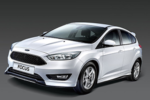

福特六和在2017年初，宣布將在國內推出Escort車系，這是一項相當有趣的產品規劃，因為Escort乃是中型級距的轎車作品，而Ford在國內市場的戰力規劃中，雖然中型級距的Focus車系，銷售主力為5門掀背車型，但亦有推出4門版Focus選擇，也就是說，Escort在臺灣市場的推出，等同屆時Ford會有兩款中型轎車進行販售，福特六和究竟會有著怎樣的規劃，以做出戰力區隔，避免同門相殘的窘境發生，這一點一直讓人備感好奇。
答案，在2017年第四季陸續揭示，藉由抬升Focus車系的產品力，空出70萬以下的價格空間，以品牌入門戰力之姿迎來Escort車系的登場；坦白說，試駕之前對於Escort產品的期待度，絕對稱不上高期待，試想一款60多萬的中型轎車，沒有搭載品牌最新安全防護、與主動駕駛科技，甚至沒有太多華麗配備妝點，從規格資訊來看，Ford Escort就是一輛很務實的中型轎車。
不過，雖然是以平價入門與務實為出發的產品，但看著頭頂上的天窗，北海岸橫飛的風雨，在天窗玻璃上留著無數雨滴，腦海中不由地勾勒起一抹陽光從天窗撒下的溫暖場景，這樣的情愫，或許正是Escort飄散的些許浪漫呢！
今天不講大小、而是「平價入門」的訴求探路
Ford在進入21世紀後，逐步開始進行了One Ford的全球戰略，也就是將原本各個地區市場各自為政，從而品牌麾下戰力龐雜多元的策略進行簡化，進而簡化生產流程、也降低研發成本；在One Ford策略下選定了多款全球戰略車款，中型級距的部分，就是由Focus作為全球戰略作品，而擁有豐厚歷史的Escort則先行畫下句點。直到2014年，Escort才又在北京車展發表了第7代，並於中國市場推出。
Ford選定Focus作為全球戰略車款的原因，時間已經有點久遠而無從考證，但Focus擁有較為動感、年輕活潑的產品調性，與Escort後來較趨成熟的取向有所差異，或許就是Ford選定Focus的關鍵吧；不過，無論Ford當年決策的原因為何，眼前這輛隸屬於第7代的Escort，確實展現出較為沉穩的氛圍，車身輪廓線條中規中矩，或許不是走在時代尖端，但卻也絕非陳年設計風格的呈現。
車頭大面積6角形水箱護罩，乃是不容錯認的家族設計元素，業已經大量運用在家族成員中，保桿下方的氣壩設計則較為低調，沒有誇張設計或突出之勢，兩側的霧燈框飾同樣也適切而不突出的點綴兩側；在引擎蓋左右兩道、往A柱延伸而去的摺線前端，頭燈組視覺上串聯著車側腰線、車頭造型與引擎上蓋，值得留意的，是雖然Escort擁有平易近人的產品定位，但高階的時尚車型頭燈仍導入了LED燈條設計，視覺上就如同晝行燈一般，不過福特六和表示，這僅能稱之為定位燈，因為亮度並不符合法規晝行燈之規範。
較趨狹長且串聯車側與車尾的尾燈組，同樣有著LED燈條的設計，且全車系列圍標配，提供Escort車尾絕佳的辨識特徵；LED的頭燈與尾燈燈條導入，其實與Escort整體設計相呼應，在較為平實且中規中矩的設計風格中，許多細節處都有暗藏驚喜，例如車尾行李箱尾端處，導入了類似導流尾翼的突出設計，就連車側腰線也是，雖然沒有展現壯碩肌理，但也適度的在視覺上有所提點。
務實的產品初衷
Escort的駕駛座艙並不會給人生疏感，同時也沒有絲毫複雜的成分於其中，福特六和提供試駕的這輛Escort時尚型，標配有3輻式多功能方向盤，中控台上方則還有內建導航、倒車顯影的8吋LCD彩色觸控螢幕，在排檔座前方的，則是恆溫空調的操作介面，這些都是Escort車室中，較為科技且提供便利性的配備。值得一提的，是福特六和為Escort時尚型標配的這套影音系統，雖然並非語音操控功能出色的SYNC，但內建更豐富的功能選擇，確實提升不少便利性。
這套影音系統還支援時尚型標配的行車紀錄器，能將行車紀錄器的螢幕鏡射在螢幕中，駕駛人輕鬆即可點選並進行操作，確實也是這套系統較SYNC更為加分的部分；除此之外，車室空間的實用性，不得不提到標準467公升的車尾行李廂，搭載一車4人的輕便行囊自然不成問題，後排座椅還能夠翻摺傾倒 (一片式，不可6/4分離)，雖然並非打造出平整空間，但提供額外的空間運用，確實有助於產品的吸引力。
確實，相比於家族其他成員，動輒SYNC、多區恆溫空調、後座出風口，甚至於ACC主動式定速巡航、ACS主動式都會行車防護，Escort確實樸實許多，僅在高階車型上標配後座中央扶手、後座傾倒裝置、定速巡航、EBA煞車力道輔助、ESP電子車身動態穩定系統，以及6氣囊。不過，在許多細節處還是會感覺到Ford的用心，包含了提升觸感的方向盤外露縫線，前台總成所運用的軟質塑料與車縫線造型，以及在車室靜肅工程上的諸多用心。
之所以提到靜肅性的表現，在於Ford所舉辦的Escort媒體試駕活動，從內湖出發後取道高速公路前往野柳，沿途在市區、高速道路、甚至於濱海的蜿蜒曲折路段，車室內的靜肅表現都相當出色；一般平價入門車款在行進間，總會傳遞出一種較為空洞的聲響，有如剛搬到新家、尚未布置擺設家具時，房間總會有著略顯孤寂的回音，但Escort的車室內，卻沒有傳出一旁車水馬龍的聲音，輪胎與路面之間的竊竊私語也適度消弭。
1.5升自然進氣辛苦但適用
雖然在一般的道路駕駛過程中，Escort展現了出色的靜肅性，不過，一旦大腳油門、或者是進入S檔後刻意手動降檔，Escort引擎室傳遞而來的聲響，就會顯得較為喧鬧，這是因為Escort搭載的動力單元，對影響要激烈操駕的心，確實辛苦了些，這具1.5升自然進氣引擎，帳面數據分別為113匹最大馬力，以及14.5公斤米最大扭力，對應中型級距車款，其實只能以適用來形容，但如果想要激烈操駕他，那就好比希望看到6歲小童就會計算微積分，並非不可能但絕對稀有而罕見。
畢竟Escort鎖定的目標族群，還是以實用交通代步工具的出發為主，換個更簡單的說法，如果搭載Ford麾下的1.5 EcoBoost渦輪增壓引擎，那售價就不可能會是70萬以內的數字，成本還是相當現實的門檻；不過，這並不代表Escort底盤有著含糊表現，在拍攝動態影像的來回驅馳過程中，會感覺到Escort雖然沒有強勢動力輸出，同時變速系統與之呼應，換檔邏輯稍顯緩和，但底盤表現穩定紮實，稱不上靈巧或蓄勢待發，卻給人一定程度的沉穩信心。
在不斷上下來回於山區彎道，過程中其實還是持續對動力輸出的不夠綿密，展現在粗喘聲浪中的力道輸出，感到強烈的不足渴望，但停下來後仔細思考，Escort產品的出發，與其說是中型轎車的入門作品，不如說是Ford品牌的入門選擇，藉由中型級距的產品規格，搭配70萬以內的價格設定，鎖定國產中型轎車級距之外，也兼顧了小型轎車的攻守設定，因此產品的「適用」是最大關鍵。
與其擁有更大的動力輸出，不如展現空間與配備的產品吸引力，也因此113匹與14.5公斤米的動力，雖然絲毫不顯熱血卻足敷日常使用，是至為關鍵的設定方向，沒有前瞻科技配備，但被動安全防護卻在高階車型上豐富配置；Ford Escort確實擁有一定程度的市場魅力，只不過銷售表現如何，仍有待品牌魅力、以及消費者信心的反應了。


-

玩轉個性視野－智能休旅Ford EcoSport放肆跨界
當生活型態改變，休閒在人們生活中的比重愈來愈高，扮演更重要角色的同時。我們對車的期待與想像，也不再只是交通工具，不再只是單純的移動...
-

歐系體質，科技氣派─Ford Mondeo圓輕鬆座擁歐系車的夢
在你我心中，永遠還是存在著另一個標竿，也是許多人追逐的夢想。那是文藝復興的發源地、那是工業革命的發起地，那是汽車產業誕生的所在，那裡是──歐洲！...
-

潮、帥、本質全優化－New Ford Focus黑潮特式版成為中型車最優質與最超值的選擇
Ford Focus以優質歐洲血統之姿，搭載最先進之強悍渦輪動力與完備之優越智能安全配備，成為台灣中型房車市場中操控與安全的代表...